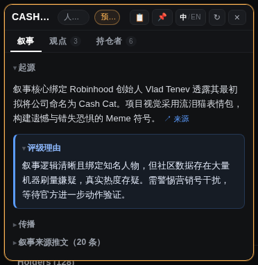
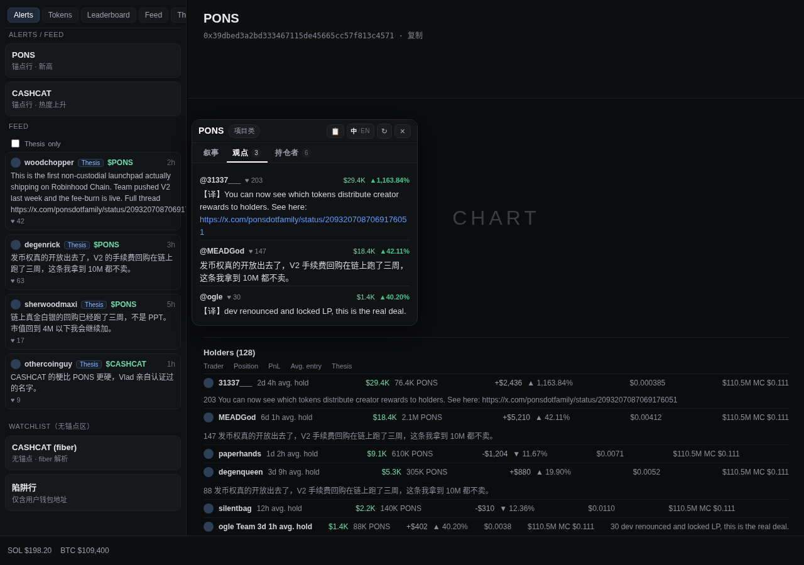
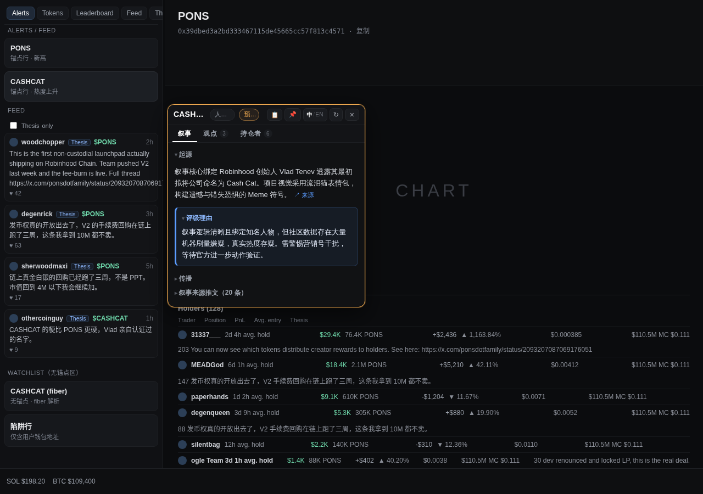
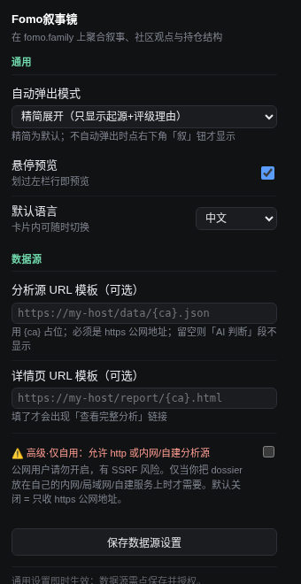

进入任意代币页，卡片自动弹出（可关）。顶部三个标签页，答的是同一个问题的三个层次： 这币的叙事是什么，社区在拿什么理由持仓，都是谁在拿。
DeBot 的叙事分析全量呈现：起源与评级理由默认摊开，传播 / 开发者 / 来源推文收成一行标题点开看。 第一屏先给结论，不是先给篇幅。占位套话（"暂无"、"未发现"之类）自动过滤，不占卡片高度。

Holders 表里每个持有人对这只币写下的 thesis：按点赞降序全量列出、去重，行头带这位持有人的 仓位与盈亏——先看他押了多少钱，再听他讲道理。非中文观点自动补译文，原文保留。

鼠标在左栏 Alerts / Feed 的某一行上停住 0.6 秒，卡片浮出该币预览；点 📌 固定。 快速划过一串行不会误触发。

自动弹出三档（精简 / 全展开 / 关闭）、默认语言、悬停预览开关，都在扩展图标的设置面板里。 还可以接入你自己的分析源（可选，见下方数据边界）。

一个装在交易网站上的扩展，你最该问的不是它有什么功能，而是它把数据发给了谁。逐条回答：
不存在"我们的后端"。没有账号体系、没有遥测、没有统计上报。你的名单和设置只存在你浏览器本地的 chrome.storage 里，卸载即清除。以下四处是它全部的数据接触面——manifest 里声明的域名你可以自己核对。
| 接触点 | 用途 | 性质 |
|---|---|---|
| app.debot.ai | 拉取代币叙事分析 | 公开接口，不登录、不带 cookie、无 key |
| fomo.family 页面 DOM | 观点与持仓者 | 零网络：只读页面上已渲染的内容，不发任何请求，不碰你的登录态 |
| 你填的分析源 | 「AI 判断」段 | 可选。不填就完全不存在；填了才申请该域名授权 |
| api.fxtwitter.com | 叙事来源推文正文 | 公开只读，不登录、不发帖 |
以「已解压扩展」方式加载，不经过应用商店，全程约一分钟。Chrome、Edge、Brave 通用（Safari / Firefox 不支持）。
点上方「下载最新版 zip」。
双击 zip 自动解压出 fomo-narrative-lens 文件夹。
在 zip 上右键 →「全部解压缩…」解压出 fomo-narrative-lens 文件夹。
不要双击进入 zip 直接用——那是个预览视图，Chrome 读不到它。
建议从「下载」挪到固定目录，比如 ~/Documents/Extensions/。
建议从「下载」挪到固定目录，比如 C:\Extensions\。
浏览器每次启动都从这个文件夹读取扩展——放在下载目录里，哪天清理下载就把扩展清没了。
地址栏输入 chrome://extensions（Edge 用 edge://extensions），
打开右上角的「开发者模式」开关。
点「加载已解压的扩展程序」，选中刚才那个含 manifest.json 的文件夹。
工具栏出现图标即安装成功。
点进任意代币页，卡片自动弹出。没有别的初始化步骤——不需要登录什么、不需要同步什么。
chrome://extensions
点该扩展卡片上的刷新圈 ↻（或重启浏览器）。配置不会丢——扩展 ID 是固定的，
即使你把文件夹挪去别的位置重装，名单和设置也都在原地。想收到新版本提醒，在 GitHub 上
Watch → Custom → Releases 即可。
chrome://extensions 确认扩展已启用，点刷新圈 ↻ 再回来。
没有自动弹卡时，代币页右下角会有一个「叙」圆钮，点它也能打开。